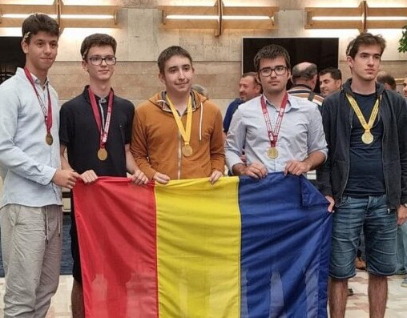

My name is Vladimir George Necula and I am an international student at Lafayette College. Currently, I am in my freshman year, trying to leverage my knowledge in all possible fields by creating side projects such as this website. I am very interested in everything that is related to Computer Science, Electrical and Computer Engineering, Mathematics and Economics.
I created this section, to give you some background about myself. You can feel free to press and open the computer folders to learn more aboutsome of my noteworthy achievements until now. I am working towards adding more, and who knows... maybe in some time from now I will ned a bigger monitor to expose all of them.
Multiple medalist at international contests and olympiads
Since I was in middle school I started participating in various contests and olympiads in computer science, math, physics and astrophysics. This enabled be to reach international level during my high school years, representing my country at prestigious contests.
Launched ROM-2 with SpaceX
At RomSpace, I worked on "SpaceSparrow" picosatellite as an electrical engineer, under the ROM-2 mission. We successfully launched our picosatellite in space with SpaceX during the summer of 2023, making it the first romanian satellite to transmite data from space back to Earth ever.
Prize winner of the NSS Space Settlement Contest
Won the second prize in the contest and then presented my projcect during International Space Development Conference.
Wrote a research paper about galaxy clusters
As an assistant at the Institute of Space Science Bucharest, I wrote a comperhensive research paper about finding galaxy clusters using complex machine learning algorithms.